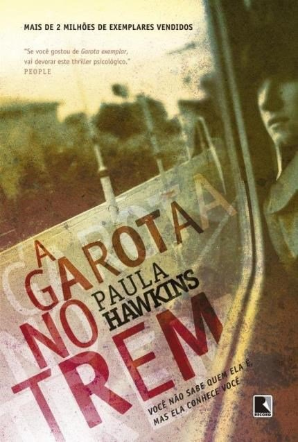

Bentinho e Capitu são criados juntos e se apaixonam na adolescência. Mas a mãe dele, por força de uma promessa, decide enviá-lo ao seminário para que se torne padre. Lá o garoto conhece Escobar, de quem fica amigo íntimo. Algum tempo depois, tanto um como outro deixam a vida eclesiástica e se casam. Escobar com Sancha, e Bentinho com Capitu. Os dois casais vivem tranquilamente até a morte de Escobar, quando Bentinho começa a desconfiar da fidelidade de sua esposa e percebe a assombrosa semelhança do filho Ezequiel com o ex-companheiro de seminário..

Todas as manhãs Rachel pega o trem das 8h04 de Ashbury para Londres. O arrastar trepidante pelos trilhos faz parte de sua rotina. O percurso, que ela conhece de cor, é um hipnotizante passeio de galpões, caixas d’água, pontes e aconchegantes casas. Em determinado trecho, o trem para no sinal vermelho. E é de lá que Rachel observa diariamente a casa de número 15. Obcecada com seus belos habitantes – a quem chama de Jess e Jason –, Rachel é capaz de descrever o que imagina ser a vida perfeita do jovem casal. Até testemunhar uma cena chocante, segundos antes de o trem dar um solavanco e seguir viagem. Poucos dias depois, ela descobre que Jess – na verdade Megan – está desaparecida. Sem conseguir se manter alheia à situação, ela vai à polícia e conta o que viu. E acaba não só participando diretamente do desenrolar dos acontecimentos, mas também da vida de todos os envolvidos.